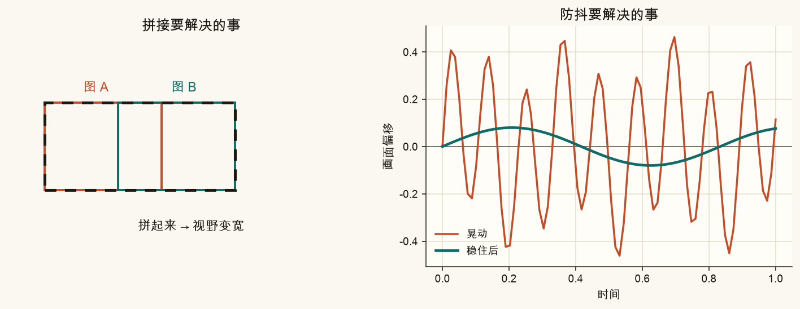
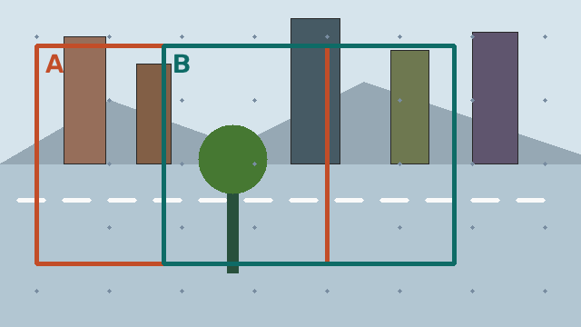
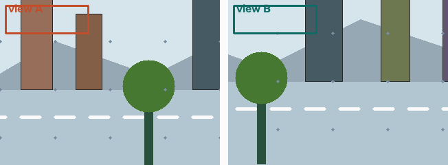
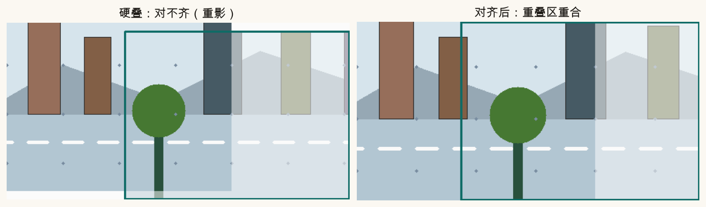
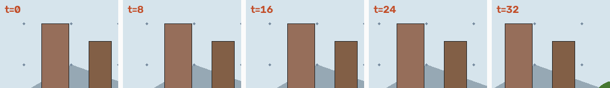
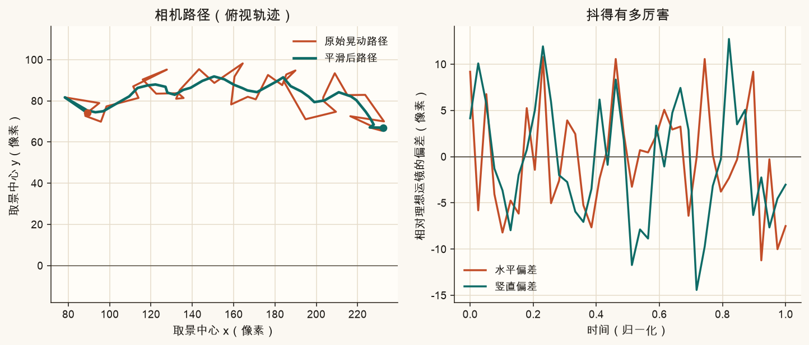

第 0 篇 · 准备 · 约 40 分钟
这一篇先让你看清两件事：两张有重叠的照片为什么「对不齐」，以及一段视频为什么「晃」。然后分清拼接与防抖各自要什么。最后装好工具，用脚本画出同一批对照图。
手机相册里的「全景」、运动相机里的「电子防抖」，听起来都和「把好几张画面收拾整齐」有关，但目标不一样。

后面会看到：这两条线共用很多积木——坐标、变换、特征点、光流、相机姿态。差别主要在「拼空间」还是「稳时间」。
假设你站在原地，先拍左边，再转向右边拍一张。两张照片会有一块重叠区域：同一栋楼、同一段路，在两张图里都出现了。
如果只是把右图往左图上硬叠，却没有把「同一物体」的像素对齐，重叠区就会出现双影。人眼对这种错位非常敏感：路面标线裂开、楼边变毛。



现在还不用会估矩阵。只要记住现象：有重叠不够，还要对齐。对齐靠的是几何变换（第 1–3 篇）和特征匹配（第 5–7 篇）。
视频可以想成「一串连续的取景框」。手持拍摄时，取景中心不会乖乖走一条平滑曲线，而会叠上高频抖动。


本篇的「路径」是用合成数据演示直觉。真正工程里，路径来自特征跟踪、光流，或陀螺仪积分——这些是第 14–23 篇的重点。
下面两个示意不需要安装 Python。先建立「错位」和「晃动」的手感，再去跑脚本。
青色半透明块代表右图。拖动偏移，看竖线何时裂成双影、何时重合。
点表示每一帧的取景中心。加大抖动幅度，轨迹变毛；点「平滑预览」看目标路径大概长什么样。
这一套笔记按四条线推进。本篇只负责「看见问题 + 工具可用」。
| 主线 | 篇目 | 你将能做什么 |
|---|---|---|
| 几何与配准 | 第 0–7 篇 | 用变换和特征把两张图对上 |
| 图片拼接 | 第 8–13 篇 | 拼全景，处理接缝、曝光与全局优化 |
| 光流重点 | 第 14–18 篇 | 从零看懂像素如何「流动」 |
| 防抖 / 陀螺 / RS | 第 19–26 篇 | 二维稳像、卷帘快门、陀螺仪 EIS |
若你最关心光流：第 1–3 篇把坐标与变换摸熟后，可以跳到第 14 篇；稳像与陀螺建议在光流之后再读。
网页上的示意关掉就没了。脚本用 NumPy 造场景，用 OpenCV 裁切、画框、写图，用 Matplotlib 出带中文标题的对照图。
import cv2
import numpy as np
scene = ... # 一张大图（脚本里合成）
view = scene[top:top+h, left:left+w].copy()
cv2.rectangle(view, (8, 8), (128, 48), (194, 77, 40), 2)
cv2.imwrite("out.png", view)记住一件小事：OpenCV 默认按 BGR 存颜色通道，Matplotlib / 浏览器按 RGB。脚本里对 Matplotlib 显示时写了 [:, :, ::-1]，就是在倒通道。
如果还没有 Python，到 python.org 安装，并勾选加入 PATH。然后打开终端，进入本文件夹（能看见 index.html）：
python3 -m venv .venv
source .venv/bin/activate # Windows: .venv\Scripts\activate
python -m pip install -r code/requirements.txt
python code/ch00_intro.py建议用虚拟环境，避免和系统里其它 OpenCV 安装打架。运行成功后终端会出现「自检通过」，并写出：
assets/figures/ch00_goals.png、ch00_overlay_compare.png、ch00_shake_path.png：课文对照图assets/images/ch00_scene_crops.png、ch00_two_views.png、ch00_shake_frames.png：OpenCV 导出的示意ch00_my_overlap.png、ch00_my_shake.png：只跟随脚本顶部「改这里」assets/images/ch00_shake_demo.mp4 短视频No module named cv2：确认已激活虚拟环境，再执行一次 pip install -r code/requirements.txt。import cv2 却立刻报动态库缺失：优先用本目录的 .venv，安装的是 PyPI 的 opencv-python。用编辑器打开 code/ch00_intro.py。顶部「改这里」只影响你的两张图；课文对照图仍按固定参数重画。
OVERLAP_SHIFT_X = 28 改成 0，OVERLAP_SHIFT_Y 也改成 0，保存后运行。打开 ch00_my_overlap.png，重叠区应基本重合，接近图 0-4 右侧。50 和 25，再运行。双影应更夸张。SHAKE_AMPLITUDE = 18 改成 4，再改成 35，对比 ch00_my_shake.png 里轨迹的毛刺。错位参数模拟的是「还没配准」；抖动幅度模拟的是「还没平滑」。后面章节会分别把这两类数，换成算法估出来的变换与路径。
先自己答，再展开。
拼接要更大的空间视野（更宽的图）；防抖要更稳的时间观感（晃动被压住的视频）。二者都可能用到对齐与变换，但评价标准不同。
缺的是对齐：把同一物理点变到同一像素位置。只有重叠区域、却没有正确的相对几何，就会重影。
默认是 BGR。交给 Matplotlib / 按 RGB 理解的工具前，常用 [:, :, ::-1] 把通道倒成 RGB。
这一篇只建立现象和工具。下一篇会把「像素坐标」说清楚：原点在哪、x/y 朝哪，以及平移、旋转、缩放怎样改一张图。